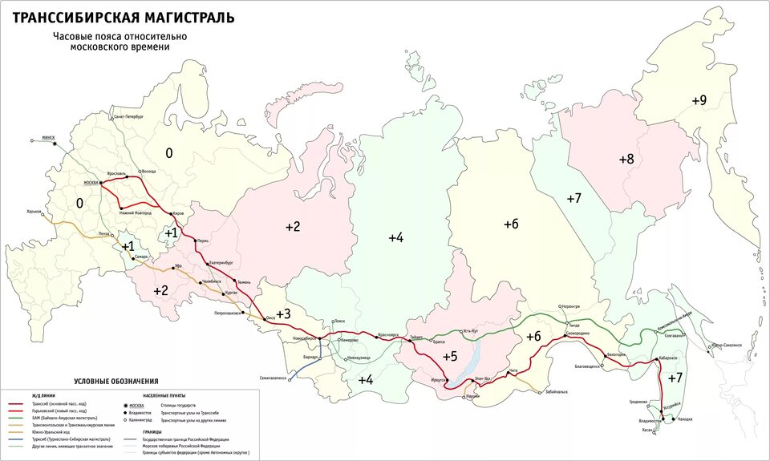
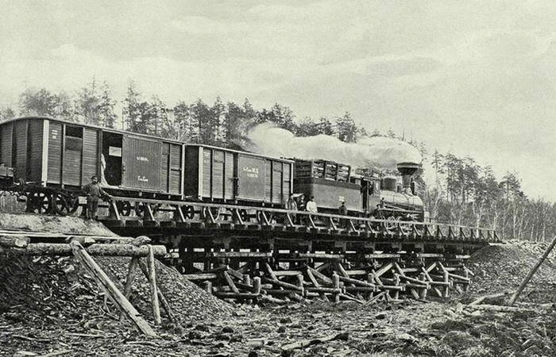
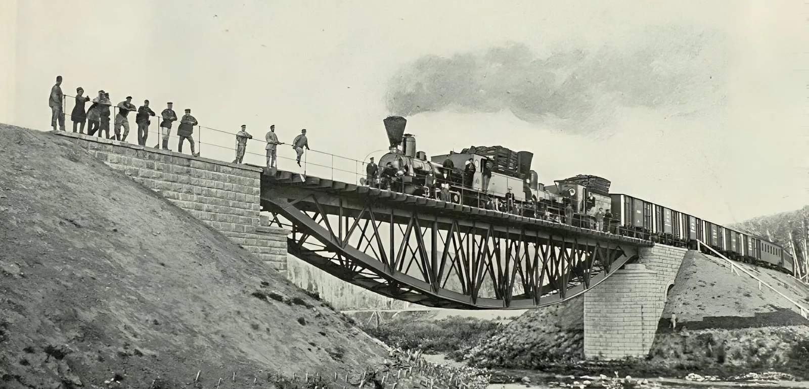
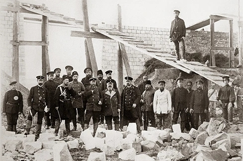
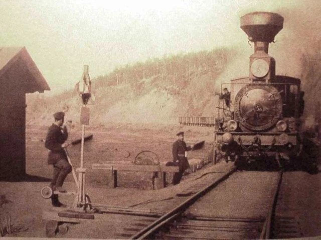

Великий Сибирский Путь
Строительство Западно-Сибирского участка и создание грандиозного моста через реку Обь
Строительство Великого Сибирского пути кардинально изменило географию нашей страны, став самым масштабным железнодорожным проектом в истории. Прокладка Западно-Сибирского участка потребовала от инженеров и изыскателей нестандартных и смелых решений. В конце XIX века признанным историческим центром региона являлся Томск. Логично было предположить, что Транссибирская магистраль проляжет именно через него. Однако этот план грозил обернуться колоссальными тратами: болотистая местность вокруг Томска и огромная ширина поймы Оби сильно усложняли задачу.

Тогда начались масштабные геодезические поиски скрытого, узкого и надежного места для переправы, которое сэкономило бы казне миллионы рублей и позволило бы надежно закрепить опоры моста на твердом гранитном основании.
Хроника сибирской стройки:
- 1893 год — официальный старт Западно-Сибирского участка и основание рабочего поселка.
- Николай Гарин-Михайловский — гениальный инженер-изыскатель, определивший точку створа моста.
- Константин Будагов — главный инженер, руководивший возведением уникального перехода на месте.
- Профессор Николай Белелюбский — создатель революционного проекта стальных ферм.
1. Открытие инженера Гарина-Михайловского
Человеком, изменившим трассировку магистрали, стал Николай Георгиевич Гарин-Михайловский — выдающийся инженер-путеец и известный писатель. В 1891 году его изыскательский отряд обследовал берега Оби. Пройдя километры через плотную глухую тайгу, у старого села Кривощёково он обнаружил уникальную природную особенность: здесь великая река сжималась прочными скалистыми берегами, образуя узкое «горло» с выходящим прямо на поверхность гранитным основанием. Это было идеальное ложе для опор будущего моста.

Михайловскому пришлось выдержать серьезное давление со стороны чиновников и купечества, настойчиво отстаивавших «томский маршрут». Однако его расчеты оказались технически безупречны: перенос моста к Кривощёково сокращал общую длину Транссибирской магистрали на десятки верст и сохранял государству около 4 миллионов рублей золотом — астрономическую сумму для конца XIX века.
2. Константин Будагов и стальной гений Белелюбского
Проект самого мостового перехода разработал всемирно известный мостостроитель, профессор Николай Белелюбский. Он применил передовую технология свободных элементов (специальные шарнирные опоры), которая делала конструкцию невероятно прочной и одновременно гибкой под колоссальным весом тяжелых движущихся составов.

Претворять эти сложные чертежи в жизнь непосредственно на месте выпало выдающемуся инженеру Константину Яковлевичу Будагову. Приехав на пустынный берег Оби весной 1893 года, он фактически стал руководителем, организатором и душой этой грандиозной сибирской стройки. Под его прямым контролем тысячи рабочих в тяжелейших климатических условиях возводили каменные устои и собирали огромные пролеты из высококлассной уральской стали.
3. Многонациональный подвиг: кто и как строил магистраль?
Возведение Западно-Сибирского участка дороги и моста через Обь превратилось в грандиозный плавильный котел для множества культур. Сюда, на окраины империи, в поисках новой жизни и заработка устремились десятки тысяч людей самых разных национальностей. Ведущую роль в проектировании и техническом руководстве играли специалисты русской и польской инженерных школ — выпускники столичных институтов путей сообщения привносили передовую европейскую техническую мысль в сибирские просторы.

Основную, самую изнурительную физическую работу выполняли русские и украинские крестьяне, массово прибывавшие из центральных губерний, а также местные сибирские старожилы. Они вручную копали глубокие выемки, насыпали насыпи и укладывали тяжелые деревянные шпалы. Рядом с ними бок о бок трудились представители коренных народов Поволжья и Урала — башкиры, татары и чуваши, которые славились выносливостью и формировали эффективные плотницкие и земляные артели.
Особой гордостью стройки были опытные каменщики из Италии. Высококлассных итальянских мастеров целенаправленно приглашали на Транссиб для сложнейших облицовочных работ. Именно их руками выполнялась филигранная теска прочнейшего местного гранита, которым покрывали «быки» — массивные опоры моста, обязанные выдерживать колоссальный напор весеннего сибирского льда. Позже этот интернациональный опыт помог сформировать уникальную рабочую культуру Будаговской слободки.
4. Рождение крупнейшего транспортного узла
В 1897 году грандиозный мост был успешно испытан и открыт для регулярного движения — тяжелые поезда пошли на восток. Поселок строителей у моста развивался с невиданной в истории скоростью. Вскоре его официально переименовали в Новониколаевск (в честь императора Николая II). Железная дорога дала мощнейший толчок развитию всей прилегающей территории.

Благодаря пересечению стального полотна Транссибирской магистрали с судоходной водной артерией — рекой Обью, бывший палаточный городок за считанные десятилетия превратился в мощнейший логистический, промышленный и торговый центр. Историки называют темпы этого развития абсолютно уникальными: менее чем за 70 лет безвестный рабочий поселок вырос в огромный город-миллионник (ныне Новосибирск), ставший сердцем всей Сибири.
Наследие первостроителей
Сегодня первый железнодорожный мост уже отслужил свой век — в конце XX века его демонтировали. Однако жители города свято чтят память путейцев. Один из огромных стальных пролетов моста, созданный Белелюбским и собранный руками интернациональной армии рабочих Будагова, был бережно сохранен. Сейчас он установлен на Михайловской набережной как главный исторический памятник — символ того, как инженерная мысль и тяжелый совместный труд на благо Транссиба подарили миру великий мегаполис.